2025 National 5 Mathematics - Paper 1 questions
Source: Scottish Qualifications Authority (SQA) / Qualifications Scotland. This is a StemInteract HTML companion, not an official HTML edition. Selectable text is supplied alongside original page images. Use the images or original PDF for equations, powers, fractions, vector notation, tables and diagrams; text extraction cannot fully preserve mathematical layout.
Jump to a question
PDF page 1
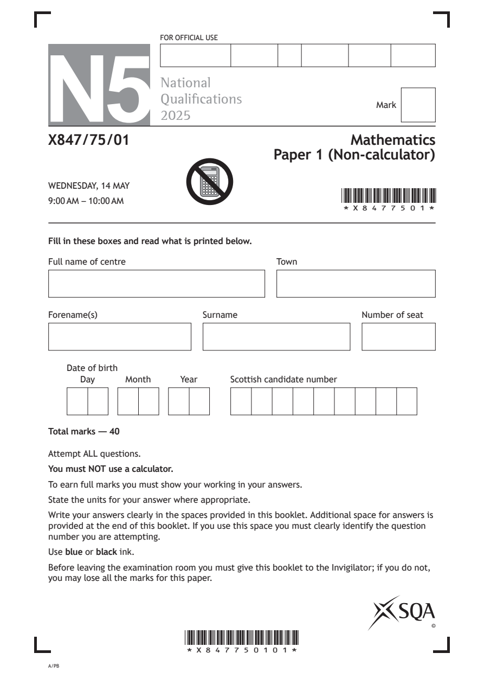
Selectable page text
FOR OFFICIAL USE
N5
National
Qualications
Mark
2025
X847/75/01 Mathematics
Paper 1 (Non-calculator)
WEDNESDAY, 14 MAY
9:00 AM – 10:00 AM
*X8477501*
Fill in these boxes and read what is printed below.
Full name of centre Town
Forename(s) Surname Number of seat
Date of birth
Day Month Year Scottish candidate number
Total marks — 40
Attempt ALL questions.
You must NOT use a calculator.
To earn full marks you must show your working in your answers.
State the units for your answer where appropriate.
Write your answers clearly in the spaces provided in this booklet. Additional space for answers is
provided at the end of this booklet. If you use this space you must clearly identify the question
number you are attempting.
Use blue or black ink.
Before leaving the examination room you must give this booklet to the Invigilator; if you do not,
you may lose all the marks for this paper.
©
*X847750101*
A/PBPDF page 2
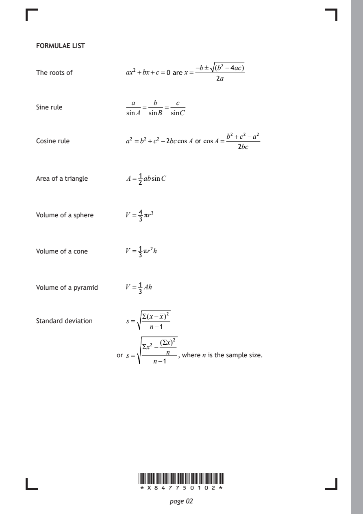
Selectable page text
FORMULAE LIST
−b± (b² −4ac)
The roots of ax² +bx+c=0 are x=
2a
a b c
Sine rule = =
sinA sinB sinC
b² +c²−a²
Cosine rule a² =b²+c² −2bccosA or cosA=
2bc
1
Area of a triangle A= absinC
2
4
Volume of a sphere V = πr³
3
1
Volume of a cone V = πr²h
3
1
Volume of a pyramid V = Ah
3
Σ(x−x)²
Standard deviation s =
n−1
(Σx)²
Σx² −
n
or s = , where n is the sample size.
n−1
*X847750102*
page 02PDF page 3
Paper 1, Question 1Paper 1, Question 2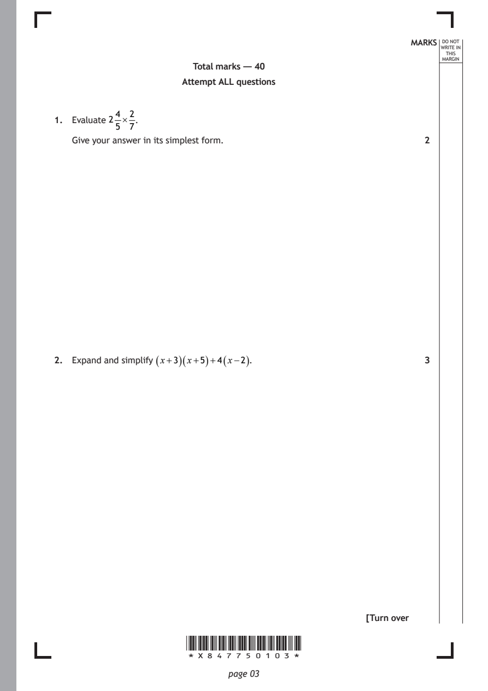
Selectable page text
MARKS _{W}^{D}_{R}^{O}_{I} _{T}^{N}OT
E IN
THIS
MARGIN
Total marks — 40
Attempt ALL questions
4 2
1. Evaluate 2 × .
5 7
Give your answer in its simplest form. 2
2. Expand and simplify ( x+3 )( x+5 )+4 ( x−2 ). 3
[Turn over
*X847750103*
page 03PDF page 4
Paper 1, Question 3Paper 1, Question 4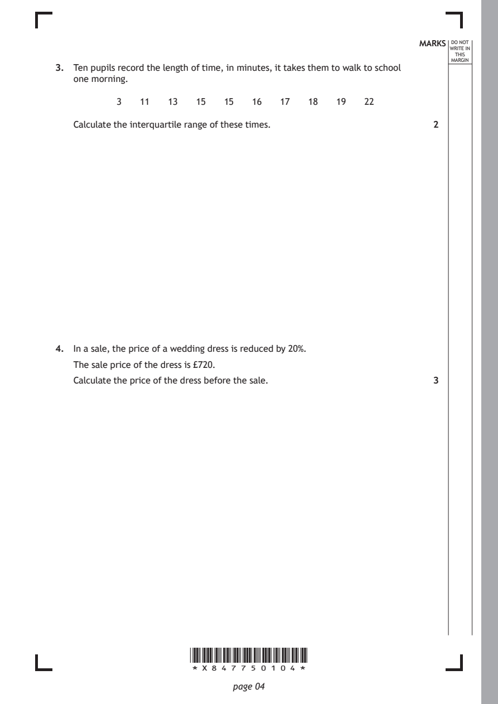
Selectable page text
MARKS _{W}^{D}_{R}^{O}_{I} _{T}^{N}OT
E IN
THIS
MARGIN
3. Ten pupils record the length of time, in minutes, it takes them to walk to school
one morning.
3 11 13 15 15 16 17 18 19 22
Calculate the interquartile range of these times. 2
4. In a sale, the price of a wedding dress is reduced by 20%.
The sale price of the dress is £720.
Calculate the price of the dress before the sale. 3
*X847750104*
page 04PDF page 5
Paper 1, Question 5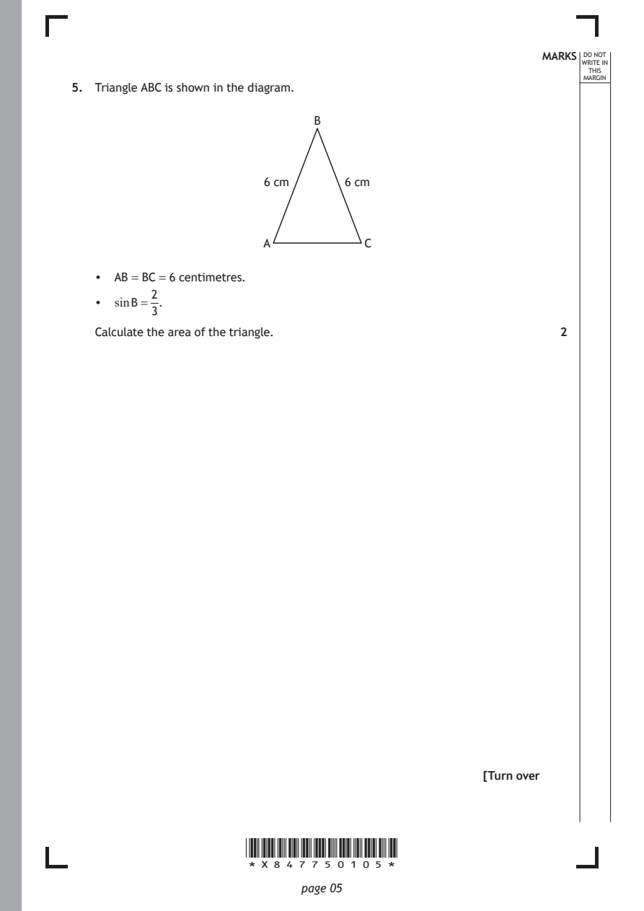
Selectable page text
MARKS _{W}^{D}_{R}^{O}_{I} _{T}^{N}OT
E IN
THIS
MARGIN
5. Triangle ABC is shown in the diagram.
B
6 cm 6 cm
A C
• AB = BC = 6 centimetres.
2
• sinB= .
3
Calculate the area of the triangle. 2
[Turn over
*X847750105*
page 05PDF page 6
Paper 1, Question 6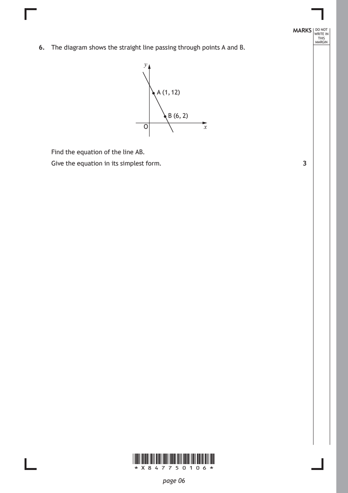
Selectable page text
MARKS _{W}^{D}_{R}^{O}_{I} _{T}^{N}OT
E IN
THIS
MARGIN
6. The diagram shows the straight line passing through points A and B.
y
A (1, 12)
B (6, 2)
O x
Find the equation of the line AB.
Give the equation in its simplest form. 3
*X847750106*
page 06PDF page 7
Paper 1, Question 7Paper 1, Question 8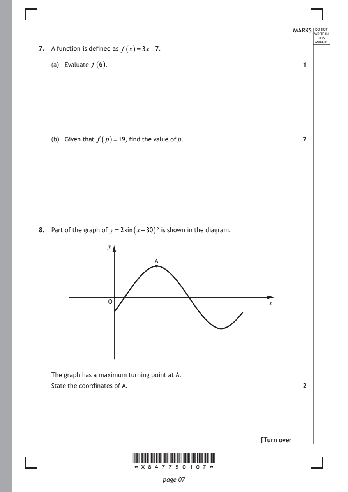
Selectable page text
MARKS _{W}^{D}_{R}^{O}_{I} _{T}^{N}OT
E IN
THIS
MARGIN
7. A function is defined as f ( x )=3x+7.
(a) Evaluate f (6). 1
(b) Given that f
(
p
)=19,
find the value of p. 2
8. Part of the graph of y =2sin ( x−30 ) ° is shown in the diagram.
y
A
O x
The graph has a maximum turning point at A.
State the coordinates of A. 2
[Turn over
*X847750107*
page 07PDF page 8
Paper 1, Question 9Paper 1, Question 10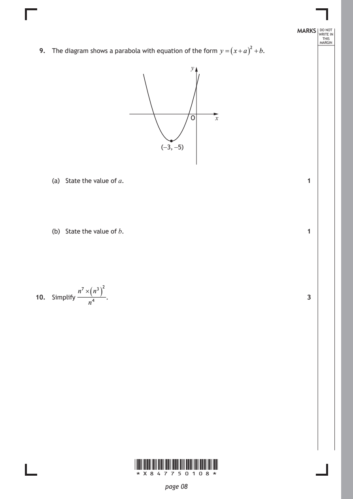
Selectable page text
MARKS _{W}^{D}_{R}^{O}_{I} _{T}^{N}OT
E IN
THIS
MARGIN
9. The diagram shows a parabola with equation of the form y =( x+a ) ² +b.
y
O x
(−3, −5)
(a) State the value of a. 1
(b) State the value of b. 1
( )
n⁷× n³ ²
10. Simplify . 3
n⁴
*X847750108*
page 08PDF page 9
Paper 1, Question 11Paper 1, Question 12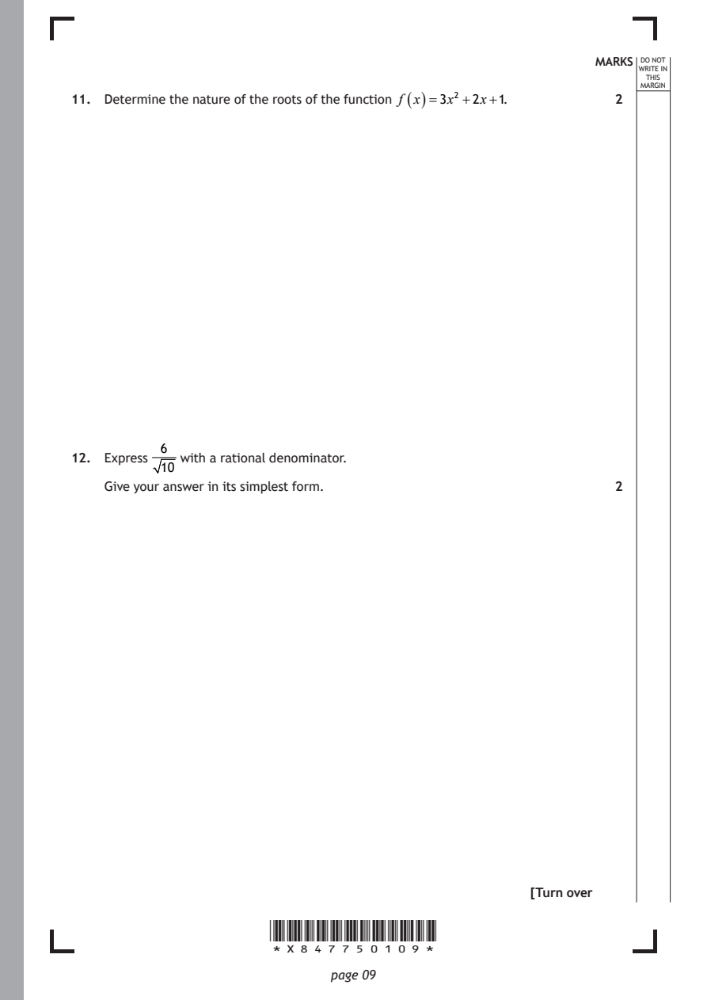
Selectable page text
MARKS _{W}^{D}_{R}^{O}_{I} _{T}^{N}OT
E IN
THIS
ARGIN
11. Determine the nature of the roots of the function f ( x )=3x² +2x+1. 2 ^{M}
6
12. Express with a rational denominator.
10
Give your answer in its simplest form. 2
[Turn over
*X847750109*
page 09PDF page 10
Paper 1, Question 13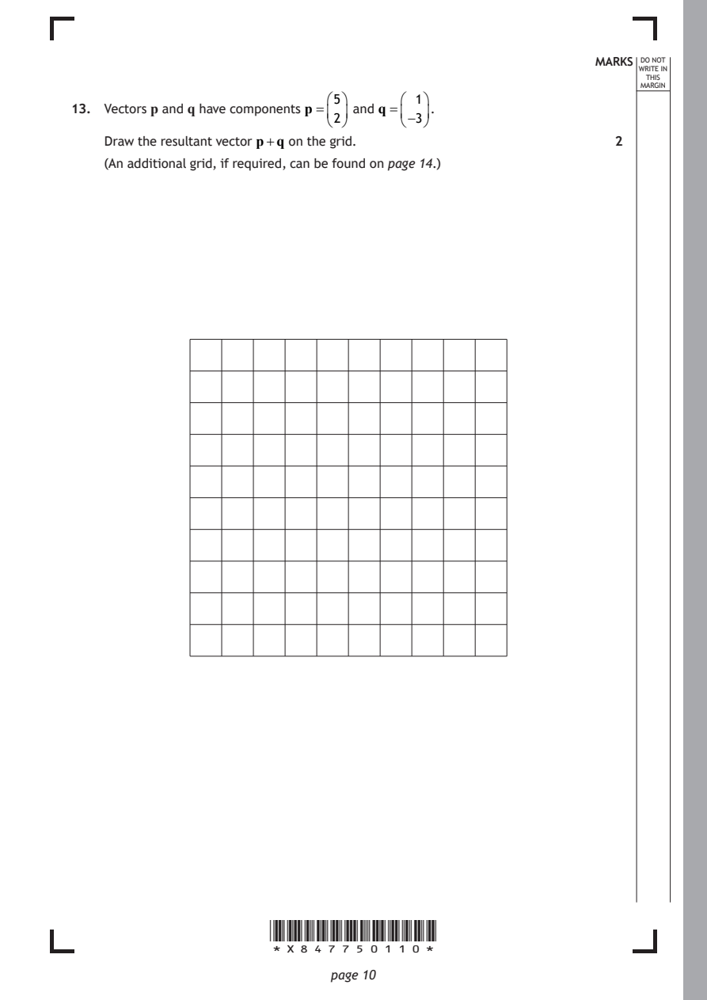
Selectable page text
MARKS _{W}^{D}_{R}^{O}_{I} _{T}^{N}OT
E IN
THIS
MARGIN
5 1
13. Vectors p and q have components p= and q= .
2 −3
Draw the resultant vector p+q on the grid. 2
(An additional grid, if required, can be found on page 14.)
*X847750110*
page 10PDF page 11
Paper 1, Question 14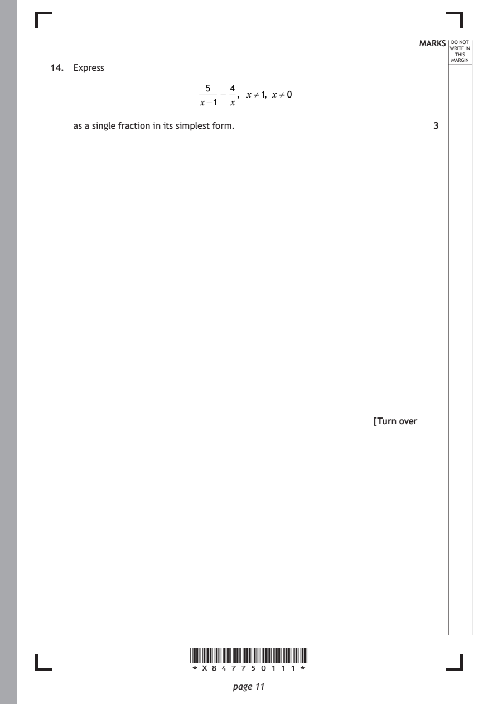
Selectable page text
MARKS _{W}^{D}_{R}^{O}_{I} _{T}^{N}OT
E IN
THIS
MARGIN
14. Express
5 4
− , x1, x0
x−1 x
as a single fraction in its simplest form. 3
[Turn over
*X847750111*
page 11PDF page 12
Paper 1, Question 15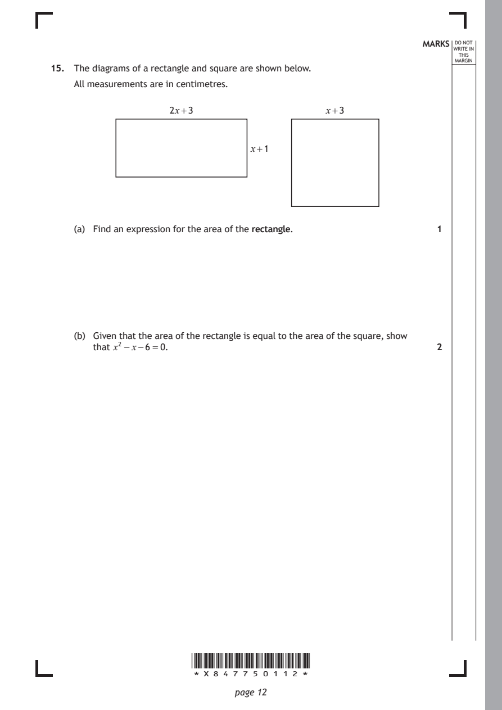
Selectable page text
MARKS _{W}^{D}_{R}^{O}_{I} _{T}^{N}OT
E IN
THIS
MARGIN
15. The diagrams of a rectangle and square are shown below.
All measurements are in centimetres.
2x + 3 x + 3
x + 1
(a) Find an expression for the area of the rectangle. 1
(b) Given that the area of the rectangle is equal to the area of the square, show
that x² −x−6 =0. 2
*X847750112*
page 12PDF page 13
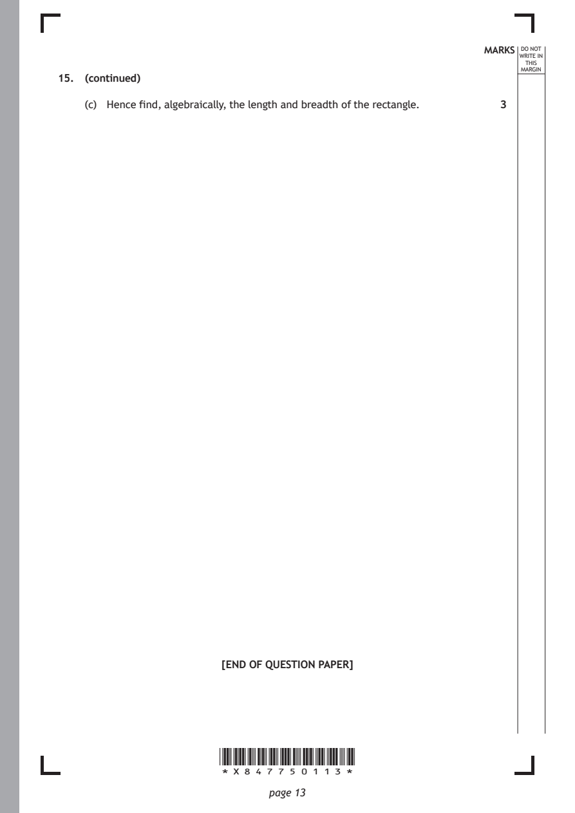
Selectable page text
MARKS _{W}^{D}_{R}^{O}_{I} _{T}^{N}OT
E IN
THIS
MARGIN
15. (continued)
(c) Hence find, algebraically, the length and breadth of the rectangle. 3
[END OF QUESTION PAPER]
*X847750113*
page 13PDF page 14
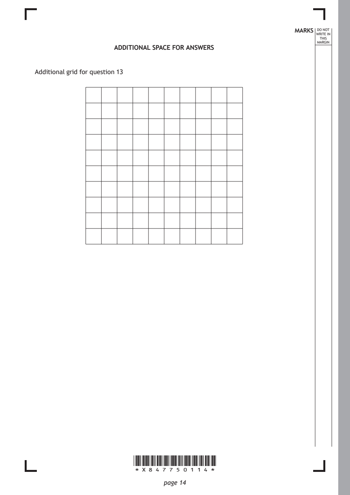
Selectable page text
MARKS _{W}^{D}_{R}^{O}_{I} _{T}^{N}OT
E IN
THIS
MARGIN
ADDITIONAL SPACE FOR ANSWERS
Additional grid for question 13
*X847750114*
page 14PDF page 15

Selectable page text
MARKS _{W}^{D}_{R}^{O}_{I} _{T}^{N}OT
E IN
THIS
MARGIN
ADDITIONAL SPACE FOR ANSWERS
*X847750115*
page 15PDF page 16
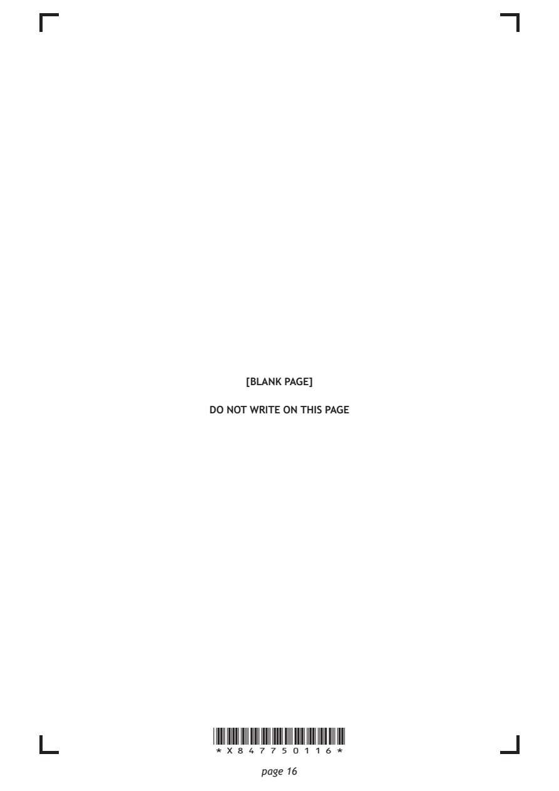
Selectable page text
[BLANK PAGE]
DO NOT WRITE ON THIS PAGE
*X847750116*
page 16